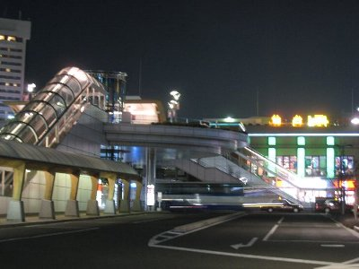
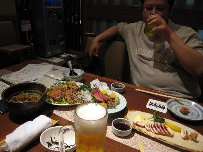
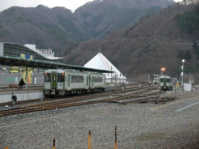
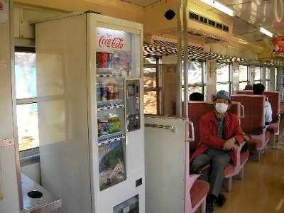
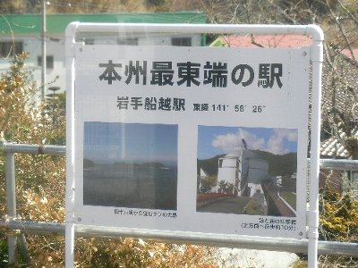

18切符で行く三陸ローカル線の旅 | 2010年3月 |
|---|---|
| 春も近くなり旅に出たくなる季節です。鉄道の旅と言えば、友人の上坂くん（仮名）の出番です。今回は上坂氏と東北・三陸海岸に旅に出ました。 本当は、寝台列車に乗って北海道もしくは出雲に行きたかったのですが、どの列車も満席。じゃあ〜、１８切符の時期だし、ローカル線に乗りに行こう！ で、三陸行きが決定です。 （一日目） 朝，静岡を7：22出発。もちろん普通列車です。東海道線で東京まで。ちょっと贅沢して沼津からグリーン車です。普通列車のグリーン席って初めてでした。 山手線経由して常磐線で東北にむかいます。あえて東北本線を使わないところがミソですね。水戸で途中下車してお昼を食べ、いわきに立ち寄り、この日は仙台(宮城県)までコマを進めました。 今回の旅は、三陸と書きましたが目的地があるわけでもなく、旅程も決めていません。当然泊まるところも決めていません。気分しだいの旅ですから。 仙台ではホテルも取れて、夜は居酒屋で地酒と牛タン煮込み等を頂きました。 一日目は、まあホント移動日ですね。移動距離546.7km。移動時間、約11時間。18切符一枚＋グリーン券2枚 | |
|  仙台駅〜 |  仙台の夜「○△□」ってお店 |
| （二日目） さて本日からローカル線の旅です。東北は、真ん中あたりを東北本線がズバッと貫いており、新幹線も高速道路もそちらを通ります。東北の東側（太平洋）、西側（日本海）は、ちょっとさみしい感じですね。 今回は東側の三陸海岸を進む事にしました。いわゆるリアス式海岸ですね。大きな街はあまりありません。そこが良いんですが。 この日は、世間を騒がした爆弾低気圧が関東・東北を襲ったときであります。各地で列車や飛行機が欠便になり、黄砂が降り注いだときです。 仙台駅に行くと騒然としており、電光掲示板には沢山の”遅延”文字が出ています。改札には人だかりが出来ています。18切符を見せると、「遅れますが良いですか？」と確認してきました。まあ、何も決めていない旅ですからね。OKです。 とりあえず三陸海岸を目指します。なるべく海岸線沿いを行きたく、気仙沼線をチョイス。この列車で気仙沼(宮城県)まで行くつもりです。 目的の快速列車は、6分遅れで出発。また強風のため徐行運転です。旅程があるわけではないけれど、乗り換え時間を考えないと、一日数本しかない路線もありますから、山の中で宿泊にもなりかねません。 列車は、途中強風のため運転見合わせで止まったり、徐行運転をしながら大分遅れて気仙沼に到着。すでにお昼です。 そして、気仙沼線は運転見合わせ、次に乗るつもりの大船渡線は、どうなるか分からない状況になってました。仕方なく、駅前ホテルで昼食。 | |
|  釜石 |  釜石の夜「暮六つ」で！これメチャ旨でした！ |
| 駅に戻りしばらく待ちましたが、、大船渡線はしばらく動かないようで、盛(岩手県)まで代行運送（ジャンボタクシー）を出すとのこと。仕方なく、これで盛まで行きました。 盛からは三陸鉄道南リアス線（第三セクター）で、釜石(岩手県)まで行くつもりですが、こちらも強風のため運転見合わせ中。 盛で宿泊するか？ただ、駅前に宿らしきもの無し。携帯で調べても近くになし。バスで花巻か盛岡まで行くか、列車復旧を待つか。 今日中に八戸まで行きたかったが、すでに厳しい状態なので、釜石まで行けばOKとして、ぎりぎりまで列車復旧を待つことにしました。 16時頃になって、やっと運行再開。この路線の列車は以前、強風で転倒したことがあるんです。ニュースとかで記憶にある方もいるんじゃないですか。だからかな、慎重ですね。 徐行を繰り返し、釜石まで到着！ もう17時だし本日はここで宿泊することとします。 夜は飲み屋「暮六つ」で、地酒とあんこう・チョウザメ・マツカワのお刺身などを頂き、満足満足♪ 締めのご飯の上に、イクラとトロトロ昆布みたいなのが出て、コレが真面目に美味い！イクラ本当は苦手だけど、これ食べれた！ 本日の移動距離209.1km。移動時間、約8時間。18切符一枚＋指定席一枚、三陸鉄道南リアス線乗車賃（18切符で割り引き有り） | |
 三陸鉄道 |  この列車には車内に自販機がまんま有る |
| （三日目） 10時近くに釜石を出発。JR山田線で北上を続け宮古(岩手県)へ。乗った列車が、そのまま三陸鉄道北リアス線に接続しているので、そのまま久慈(岩手県)へ。 本日も風が強く、時折徐行運転を繰り返していましたが、おおむね良好。天気もいいし、景色も良い。車窓から青い海を眺めるのは、気持ちが良いね〜 運行状況ばかり書いてしまったが、このあたりの列車は非電化で、ディーゼル機関で動いています。もちろん単線です。車両はだいたい一両編成だったりします。（今日は2両だったけど） 典型的なローカル線ですね。運転席まで行くと前方が見え、真っ直ぐな線路が続いています。人工物は少ないし、下手をすると駅周辺に何もなかったりします。当然、無人駅です。 な〜んか、のんびりしていて良いですよね〜 この沿線はトンネルが多く、カーブは少ない感じがします。特に三陸鉄道北リアス線は、東北一長いトンネルがあるそうで、途中から出口の明かりが見えているのに、なかなか近づいて来なかったり。 さて、久慈から八戸も海が見えて気持ちいの良い旅が出来ました。八戸を経由して三沢まで。とりあえずここが旅の終点です。 ローカル線の旅 移動時間トータル28時間 968.1km 帰りは 三沢空港から羽田まで飛行機でひとっ飛び。1時間ちょっとでした。 | |
|  本州最東端だって。さすが三陸海岸！ |  車窓からの三陸海岸 |
| いや〜久しぶりのローカル線の旅。楽しかったですね。昼間っからお酒飲みながら行けるのも良いね。寝ててもいいし。 便利で早い旅も良いけど、のんびりした旅、いいよね〜 | |
| 写真＆コメント ｂｙ べっしー | |